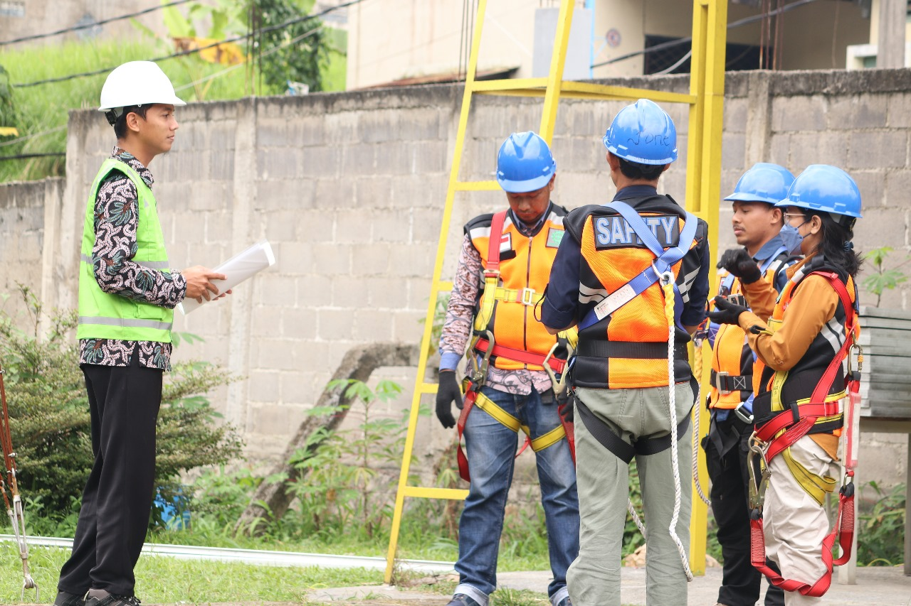

VISI MISI LSP ENERGI TERBARUKAN
VISI
Menjadi Lembaga Sertifikasi Profesi yang profesional, independen, dan terpercaya dalam menjamin kompetensi tenaga kerja di bidang energi terbarukan yang berdaya saing nasional dan global


MISI
- Menyelenggarakan sertifikasi kompetensi yang objektif, transparan, dan akuntabel sesuai dengan standar yang ditetapkan BNSP.
- Mengembangkan skema sertifikasi yang relevan dengan kebutuhan industri energi terbarukan.
- Meningkatkan kualitas SDM energi terbarukan melalui sistem sertifikasi berbasis kompetensi.
- Menjalin kerjasama dengan dunia usaha, dunia industri, pemerintah, dan lembaga pendidikan dalam rangka pengembangan kompetensi tenaga kerja.
- Mendukung program nasional dalam peningkatan daya saing dan kemandirian energi melalui penguatan kompetensi SDM energi terbarukan.